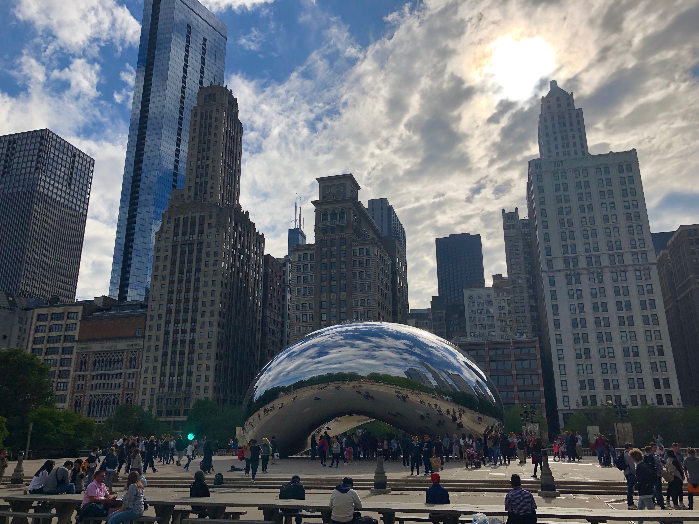
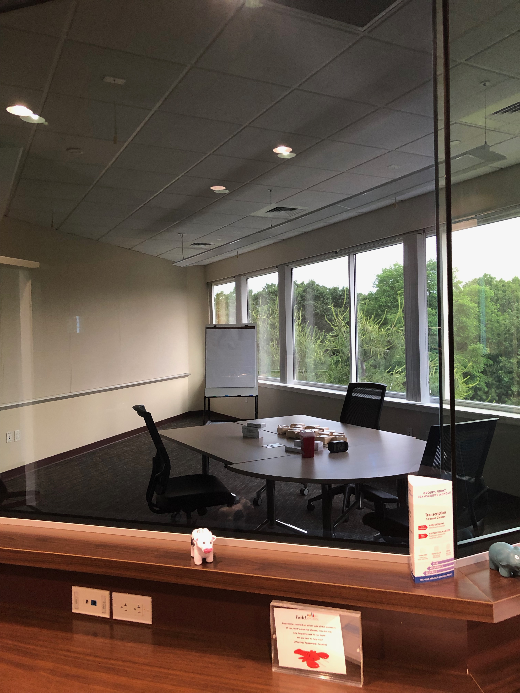
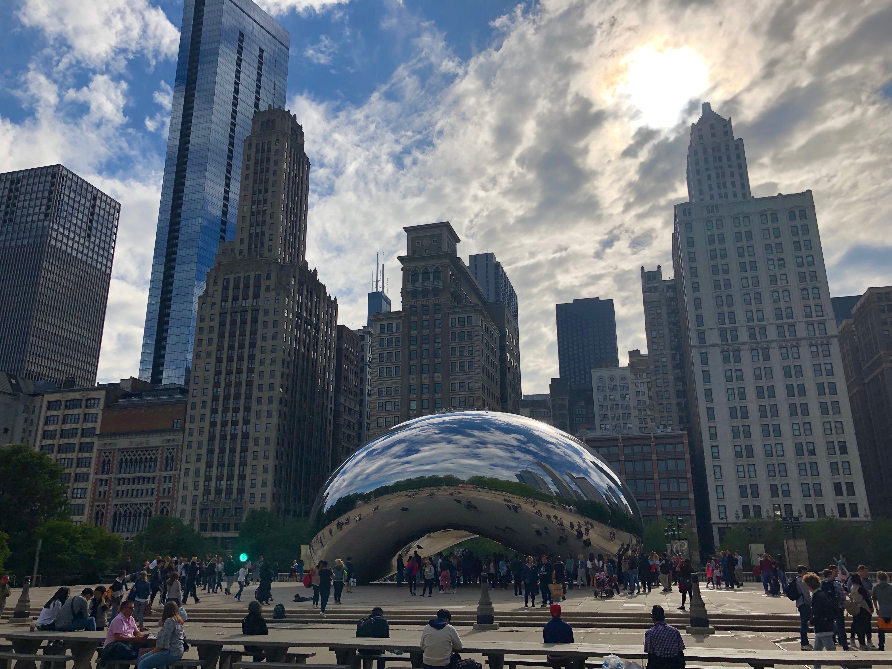
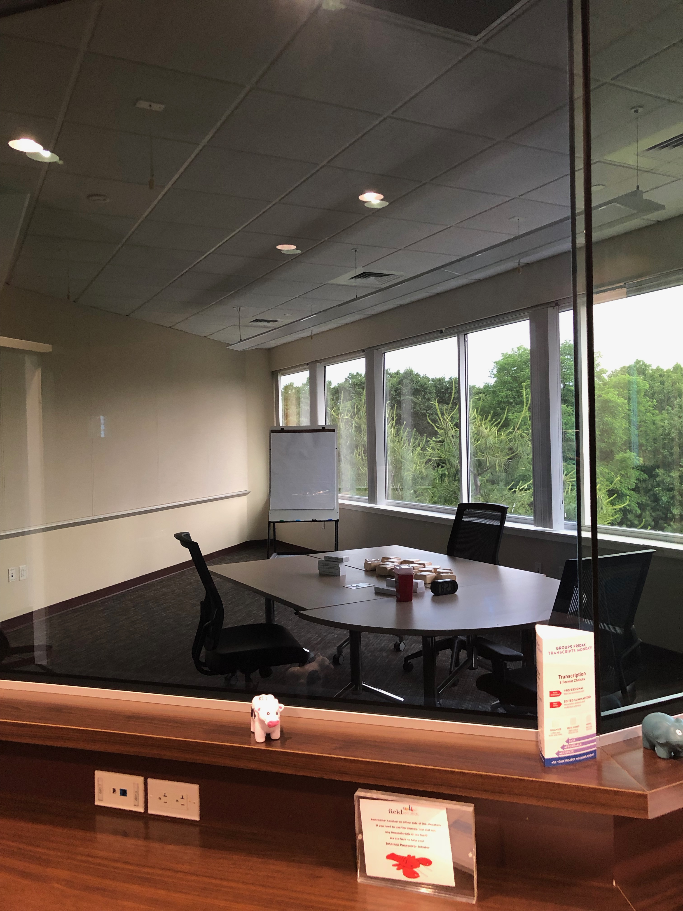
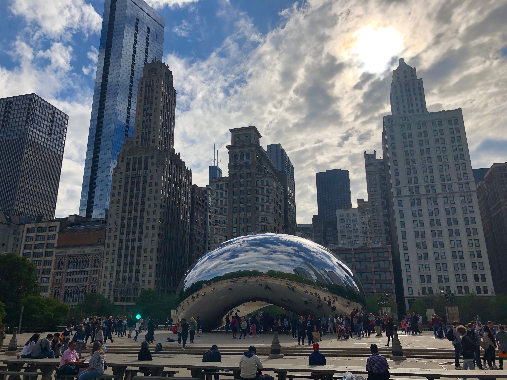
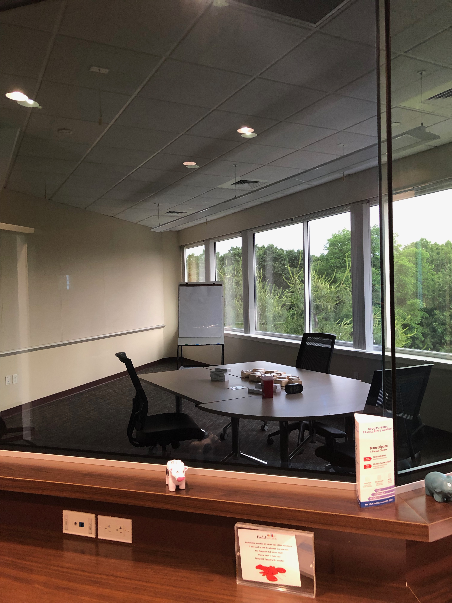

Hi, my name is Lexie Kirsch.
I am a Human Factors Engineer
seeking use-related problems to solve,
usability studies to run, data to analyze,
risks to mitigate, & user experiences to improve.
I graduated from Tufts University in May 2019 with a Masters in Human Factors Engineering. My focus was on applying human factors to medical technology to reduce medical error (the third leading cause of death in America!).
Below are some of my projects--they range from a book synopsis to a warning placard for a nebulizer.
Now I work at Farm Design,
a medical device design consultancy
in Hollis, New Hampshire.

At Farm I've familiarized myself with a variety of different medical devices, from auto-injectors and pen injectors to blood analyzers; I've moderated formative and summative usability studies; and I've analyzed data and written reports...
I've also traveled to Boston, Waltham, Chicago, Milwaukee, Charlotte, Atlanta, Tampa, and Denver for testing; I've assembled and dressed training manikins; I've acquired quite a collection of Fieldwork plushies; and I've built a bedside table in the machine shop!
In my spare time, you can find me escaping escape rooms and crushing my friends at word games :).